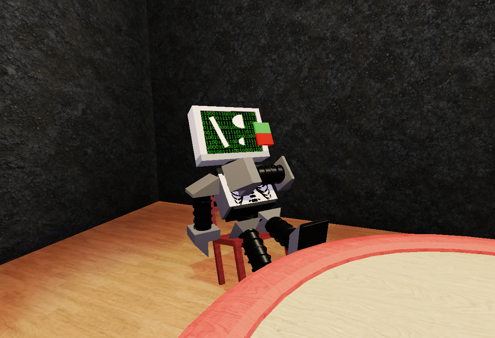

⌂

.
Badware is a virus who pilots the body he currently has.
Once said machine is infected, the virus cannot be removed.
He is really mocking and messes around with others a lot. Being somewhat enemies with Hugo at that.
He seems to have been wanting power but that has changed since then.